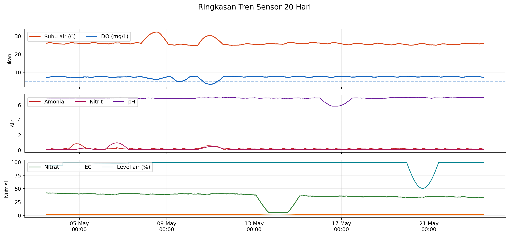

Tren Sensor 20 Hari
Grafik utama kualitas air, nutrisi, level air, dan kondisi greenhouse.

Pembacaan Terakhir
| Waktu | DO | Suhu | pH | Risk | Status |
|---|---|---|---|---|---|
| 23 May 11:25 | 7.33 | 25.99 | 6.99 | 0.0 | Normal |
| 23 May 11:30 | 7.34 | 26.02 | 6.99 | 0.0 | Normal |
| 23 May 11:35 | 7.29 | 26.00 | 7.00 | 0.0 | Normal |
| 23 May 11:40 | 7.32 | 26.02 | 7.00 | 0.0 | Normal |
| 23 May 11:45 | 7.26 | 26.02 | 7.00 | 0.0 | Normal |
| 23 May 11:50 | 7.28 | 26.03 | 7.00 | 0.0 | Normal |
| 23 May 11:55 | 7.37 | 26.06 | 7.00 | 0.0 | Normal |
| 23 May 12:00 | 7.28 | 26.07 | 7.00 | 0.0 | Normal |
Catatan Akademik
- OSU Extension: aquaponic pH 6.5-7.5 should be maintained; fish pH target near neutral. sumber
- OSU Extension: tilapia optimal water temperature listed around 74-80 F. sumber
- UF/IFAS: dissolved oxygen is a primary fish-production water quality parameter. sumber
- UF/IFAS: ammonia is a key intensive-system fish risk after oxygen; low oxygen can disrupt nitrification. sumber
- FAO small-scale aquaponics: oxygen, pH, ammonia, nitrite, nitrate, and temperature are core monitoring variables. sumber